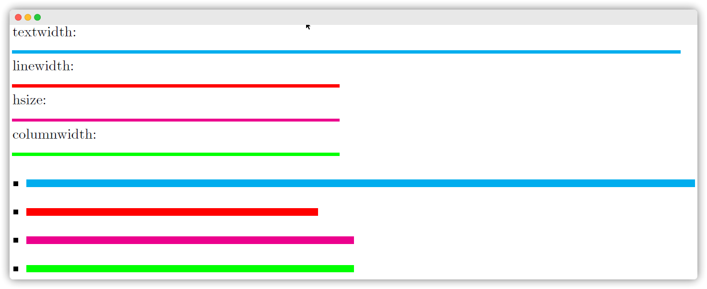
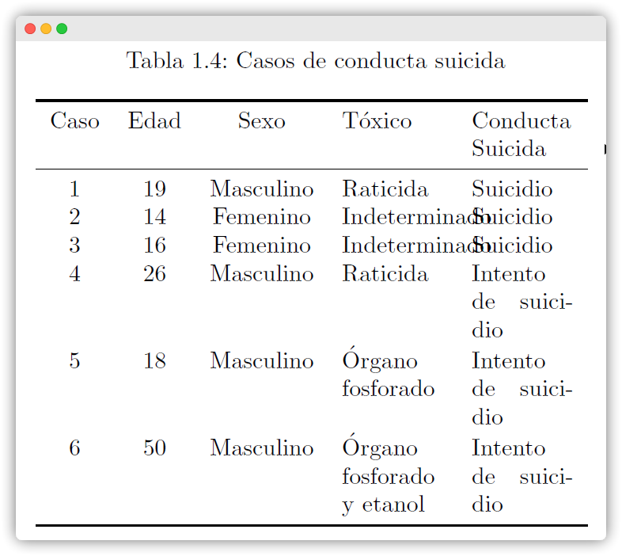
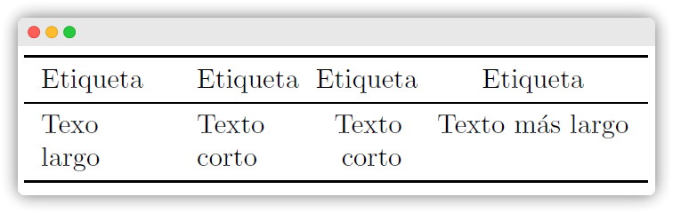

Manejo de tablas en \(\LaTeX\)
Modificar el tamaño de tablas
Muchas veces el contenido de una tabla sobrepasa los límites de la hoja como el ancho del formato utilizado en una o dos columnas. Para ello, existen múltiples maneras de adaptar el extenso contenido de una celda en múltiples lineas utilizando el entorno básico \begin{tabular}...\end{tabular}. Sin embargo, resulta tedioso realizar el mismo tratamiento para cada tabla y ni que decir en diversos archivos. Así que una solución práctica es dejar que \(\LaTeX\) calcule el ancho de las columnas de forma automática y se ajuste al contenido deseado, definiendo el tipo de alineación de las columnas y ancho máximo de la tabla. Para ello, se recomienda el uso del entorno \begin{tabularx}…\end{tabularx} luego de cargar el paquete \usepackage{tabularx} en el encabezado del archivo .tex.
Pero antes de presentar los ejemplos, es necesario mostrar las diferencias entre la terminología utilizada por \(\LaTeX\) para determinar la longitud de una línea de texto (\textwidth) y columna (\linewidth) cuando se utiliza una configuración en una o dos columnas, incluido en un entorno de lista.
Dimensiones en \(\LaTeX\)
\textwidthes el ancho constante del bloque total de texto.\linewidthes el ancho actual de la línea de texto dentro de una columna.\hsizees el ancho de la actual línea antes de saltar a la siguiente línea.\columnwidthes el ancho de una sola columna de texto (que coincide a\textwidthen un documento de una sola columna).
En una columna

oneside o onecolumnEn dos columnas

twoside o twocolumnAjustando al ancho de la hoja
Una sola columna
Utilizando el entorno de tablas por defecto \begin{tabular}...\end{tabular}, el resultado es el siguiente:

\begin{table}[h]
\centering
\caption{Casos de conducta suicida}
\begin{tabular}{ccccc}
\toprule
Caso & Edad & Sexo & Tóxico & Conducta Suicida \\
\midrule
1 & 19 & Masculino & Raticida & Suicidio \\
2 & 14 & Femenino & Indeterminado & Suicidio \\
3 & 16 & Femenino & Indeterminado & Suicidio \\
4 & 26 & Masculino & Raticida & Intento de suicidio \\
5 & 18 & Masculino & Órgano fosforado & Intento de suicidio \\
6 & 50 & Masculino & Órgano fosforado y etanol & Intento de suicidio \\
\bottomrule
\end{tabular}
\label{tab:Tabla0}
\end{table}En la sentencia \begin{tabular}{ccccc}, cada valor de c indica la alineación ordenada de las columnas. En este caso, la tabla tiene cinco columnas con el contenido centrado c. Otros valores como l y r indican una alineación a la izquierda y derecha respectivamente.
Por otro lado, el ancho de la tabla anterior puede modificarse de forma intuitiva utilizando el paquete tabularx que trabaja con el espaciado horizontal.
A diferencia de las alineaciones c, l y r, tabularx ofrece una nueva alineación por defecto X que permite justificar el contenido de la columna. Siendo muy útil para contenidos extensos.
Para ello se modifica el entorno de tabla \begin{tabular}...\end{tabular} por \begin{tabularx}...\end{tabularx}.
- Al ancho total de una línea de texto. Para ello se utiliza el comando
\begin{tabularx}{\linewidth}{cccXX}. Donde{\textwidth}indica que el ancho máximo de la tabla es el ancho total de la hoja (configuración de una columna) según se aprecia en la Tabla Figura 2.
- A la mitad de la ancho de una línea de texto. Para ello se especifica la proporción deseada respecto del ancho base
\textwidth. La Tabla Figura 3 utiliza un ancho reducido al 80% de la tabla anterior definiendo\begin{tabularx}{0.8\textwidth}{cccXX}.
- Cuidado!!! Disminuir demasiado el ancho puede superponerse el contenido de las celdas en la tabla. La tabla Figura 4 muestra una reducción del 50% según
\begin{tabularx}{0.5\textwidth}{cccXX}.



Dos columnas
En un formato de dos columnas, el ancho de cada tabla esta restringido al ancho de cada columna definida por \linewidth.
Utilizando la configuración de centrado X para columnas con contenido extenso. En la Figura 1.5, la configuración de centrado de columnas centro-centro-centro-X-X ordena el contenido de las columnsas por defecto. No obstante existe superposición de contenido entre celdas contiguas. Haciendo uso del siguiente comando
\begin{tabularx}{\linewidth}{cccXX}.
Modificando la separación entre columnas. Es posible modificar el espacio entre columnas por defecto y ajustar más el contenido de la Tabla 1.6 de ser necesario. Haciendo uso del siguiente comando
\setlength\tabcolsep{0.7mm}.
Creación de nuevos argumentos para el control y alineación de columnas. La distribución del contenido de las columnas puede mejorarse aun más si se combina con la creación de nuevos argumentos para ajustar el contenido. Así, utilizando el comando
\newcolumntype{nombre}[argumento]{Definición}se definieron tres alineaciones automáticas basadas enXutilizando los criterios de centrado (\centering), a la derecha (\raggedleft) e izquierda (\raggedright). Así, la configuración para la Figura 1.7 fue\begin{tabularx}{\linewidth}{cccXC{1}}. Donde las nuevas alineaciones se definieron como:``` \newcolumntype{L}[1]{>{\hsize=#1\hsize\raggedright\arraybackslash}X} \newcolumntype{R}[1]{>{\hsize=#1\hsize\raggedleft\arraybackslash}X} \newcolumntype{C}[1]{>{\hsize=#1\hsize\centering\arraybackslash}X} ```Donde el parámetro
C{1}indica la proporción respecto del ancho base de la columna. En este caso, el valor1indica el ancho por defecto.
Utilizando la configuración
\begin{tabularx}{\linewidth}{cccC{1}C{1}}en la Tabla 1.8.
Utilizando la configuración
\begin{tabularx}{\linewidth}{cccR{1}R{1}}en la Tabla 1.9.

- Modificando el propio ancho de la columna. Utilizando el comando
\begin{tabularx}{\linewidth}{L{1} L{0.7} R{0.7} C{1.6}}. Por lo tanto, la cuarta columna se adapta mejor un contenido más extenso a comparación con las otras columnas.
